Currency System
Essentia uses a structured currency system based on the value and weight of the element used to mint each coin. Not all planets use currency - some use advanced credit systems.
| Coin | Conversion | Use |
|---|---|---|
| Silver Coin | Base coin (~180/lb) | Basic unit; everyday purchases, taxes, small expenses |
| Gold Coin | 1 Gold = 50 Silver | Substantial purchases, major economic transactions |
| Electrum Coin | 1 Electrum = 10 Gold (500 Silver) | Mid-tier transactions, regional trade |
| Platinum Coin | 1 Platinum = 500 Gold (25,000 Silver) | Estates, vehicles, spacecraft, one-of-a-kind relics |
Characters with Vault accounts can write signed currency notes (checks) for very high-value transactions. Zailister is the universe's reserve currency hub. The last 3 planets (Futurem, Omne, Tredici) use laser-secured credit systems only and view universal coins as worthless.
Refinement and Mining (Armorer Tree) Rules
Rule: When a character mines ore, they roll a d100 and add their Mining Bonus (if they've learned the Mining Skill under the Armorer Profession Tree). The total determines the refinement yield percentage based on the table below. The value of the raw ore is a fixed base amount specific to each ore type per ounce, which you multiply by the weight in ounces and the yield percentage to determine the final value of the ore.
The final ore value = Raw ore base value per ounce × Weight in ounces × Refinement yield percentage
This process models the quality and efficiency of extraction, with higher rolls indicating better yields.
Refinement Yield Table
| Roll Range (d100 + Bonus) | Purity Percentage | Description |
|---|---|---|
| 1 – 50 | 20% | Low purity, rough or unrefined gemstone |
| 51 – 70 | 50% | Moderate purity, semi-refined gemstone |
| 71 – 85 | 70% | Good purity, refined gemstone |
| 86 – 99 | 85% | Very high purity, near-flawless gemstone |
| 100 | 100% | Flawless or divine-quality gemstone |
Raw Ore Base Values (per ounce)
| Ore Type | Base Value per Ounce (Gold) |
|---|---|
| Pyronium | 1 |
| Quantite | 2 |
| Iridium | 1 |
| Orichalcum | 2 |
| Aetherium | 3 |
| Mithril | 2 |
| Dragon Scale | 4 |
| Vibranium | 5 |
| Eldritch Obsidian | 3 |
| Celestial Bronze | 4 |
| Starmetal | 4 |
| Titanium | 4 |
| Osmium | 6 |
| Tungsten | 4 |
| Ruthenium | 4 |
| Chromium | 4 |
| Steel | 2 |
| Inconel | 4 |
| Magnesium (Hadfield) | 4 |
Earth Elements - Gems
Gem Purity and Quality
Gems can vary in purity and quality, which affects their value and magical potency. The purity percentage indicates how refined or flawless the gem is, influencing its base value and enchantment capabilities. Higher purity gems are more valuable and more effective in magical applications.
Gem Purity Roll Bonus
When mining or crafting gems, you roll a d100 and add your Mining Bonus to determine the final quality and value of the gem. The total roll, combined with the gem's inherent purity percentage, influences the final worth and effectiveness of the gemstone. A higher roll plus bonus results in a better-quality gem, which can lead to higher value or more potent enchantments.
| Roll Range (d100 + Bonus) | Purity Percentage | Description |
|---|---|---|
| 1 – 50 | 20% | Low purity, rough or unrefined gemstone |
| 51 – 70 | 50% | Moderate purity, semi-refined gemstone |
| 71 – 85 | 70% | Good purity, refined gemstone |
| 86 – 99 | 85% | Very high purity, near-flawless gemstone |
| 100 | 100% | Flawless or divine-quality gemstone |
Gem Base Value per Carat
The base value of a gem depends on its quality, size, and rarity. The value per carat is used to calculate the total worth based on the gem's weight. Higher quality gems or those with higher purity typically fetch higher prices. These base prices serve as a starting point for valuing gemstones in trade, crafting, or enchantment purposes.
| Gem | Base Price (Gold) |
|---|---|
| Diamond | 100 |
| Sapphire | 50 |
| Ruby | 60 |
| Emerald | 50 |
| Topaz | 30 |
| Amethyst | 35 |
| Obsidian | 10 |
| Garnet | 25 |
| Citrine | 20 |
| Nyxium | 150 |
| Infernium | 150 |
| Aetherstone | 200 |
| Moonstone | 150 |
Earth Elements - Metals
Metals are foundational materials throughout Essentia, valued for strength, versatility, and magical conductivity.
| Metal | Harvesting Technique | Value | Power | Drop on Failed Modification |
|---|---|---|---|---|
| Pyronium | Extracted from magma flows | 150-300 Gold/ingot | Fire-resistant; ideal for heat-resistant weapons and armor | Pyronium scrap |
| Quantite | Harvested from interstellar dust fields | 300-600 Gold/ingot | Extremely valuable; used in advanced crafting and technology | Quantite scrap |
| Lead Alloy | Standard smelting | 1-5 Gold/ingot | Blocks magical detection; used in anti-magic containers | - |
| Iridium | Found in meteorite fragments | 150-250 Gold/ingot | Resists magical and elemental damage; used in legendary items | - |
| Orichalcum | Smelted from rare enchanted ore | 250-400 Gold/ingot | Greatly boosts enchantments and elemental affinity | - |
| Aetherium | Synthesized in magical laboratories | 400-800 Gold/ingot | Source of immense energy; powers world-altering devices | - |
Organic Elements
Harvested from creatures, essential for rituals, enchantments, and alchemy. The following elements have spell, potion, and/or scroll versions. When these materials are used to cast, Mana is not consumed.
| Reagent / Organic Element | Value | Notes |
|---|---|---|
| Bone Dust | 1 - 3 Gold /gm. | Common reagent, used in necromancy and curses. |
| Bat Wings | 5 - 10 Gold /gm. | Rare, used for flight, invisibility, and rituals. |
| Elderwood Ash | 2 - 4 Gold /gm. | Moderate rarity, channels ancestral energies. |
| Fairy Wings | 5 - 10 Gold /gm. | Delicate, used in enchantments and illusions. |
| Reptilian Tail | 3 - 6 Gold /gm. | Used for regeneration potions or curses. |
| Beast Blood | 4 - 8 Gold /gm. | Enhances strength and resilience. |
| Star Crystals | 10 - 20 Gold /gm. | Used to invoke divine or celestial effects. |
| Moonflower Petals | 5 - 10 Gold /gm. | Harvested at night, used in invisibility potions. |
| Luckstone | 3 - 7 Gold /gm. | Gives +1 to +3 chance, used in luck-based rituals. |
| Blessed Alloy | 50 - 100 Gold /gm. | Rare, used in high-level crafting. |
| Alicorn Dust | 50+ Gold /gm. | From shedded unicorns' Alicorns, extremely rare. |
| Dragon Ichor | 100+ Gold /oz. | From dragon-type creatures, effects depend on dragon type, extremely rare. |
Sci-Tech Elements
Advanced sci-tech materials mined, synthesized, or infused through high-energy and arcane processes. Form the building blocks of data chips, starship components, energy sources, and high-tech weaponry.
| Material | Harvesting Technique | Value | Power | Drop on Failed Modification |
|---|---|---|---|---|
| Plasma Crystal | Extracted from stellar plasma fields | 50 Gold/core | High-energy plasma source for starship engines and plasma weaponry | Plasma shard |
| Laser Crystal | Mined from asteroid belts; refined with high-energy alchemy | 30 Gold/crystal | Focuses and amplifies laser beams for weapons or cutting tools | Laser shard |
| Quantum Alloy | High-energy alchemical synthesis of rare space minerals | 75 Gold/batch | Crafts advanced circuit boards, processors, and energy conduits | Quantum alloy scrap |
| Photon Core | Photonic energy condensates with rare crystalline materials | 40 Gold/core | Energy source for photon-based weapons and propulsion systems | Photon shard |
| Dark Matter Infused Ore | Collected from cosmic dark matter reservoirs via ancient alchemy | 100 Gold/infusion | Reinforces armor and weapons; grants dark energy amplification | Dark matter fragment |
| Cryo-Exotic Alloy | Smelted from space metals infused with cryogenic magic | 35 Gold/ingot | Crafts heat- and cold-resistant plasma weapons and armor | Cryo alloy scrap |
| Starsteel | Forged from space minerals fused with cosmic energy | 45 Gold/ingot | Lightweight, ultra-strong material for starship hulls, weapons, and armor | Starsteel fragment |
| Synthetic Fiber | Nano-engineered polymers infused with magic for durability | 10 Gold/roll | Used in flexible stealth suits, armor, and high-tech gear | Synthetic fiber shard |
| Energy Conduit | Conductive crystalline materials infused with plasma and arcane energy | 25 Gold/unit | Facilitates high-capacity energy transfer in ships and weapons | Conduit fragment |
| Nano-Infused Crystal | Crystals infused with nano-machines and arcane energy | 60 Gold/crystal | Creates self-repairing technology or enhanced energy storage | Nano crystal shard |
| Voidstone | Mined from shadowed cosmic voids; infused with dark magic | 80 Gold/stone | Manipulates space, teleportation, or shadow energy | Void shard |
| Stingers | Found on Futurem, Omne, and Tredici | - | Shimmering metallic purple hue; lattice structure makes it incredibly strong yet lightweight. Essential for advanced technology and spacecraft construction. | - |
Prism Elements
Captured when a creature is slain by an attack, spell, or effect linked to the Soul Prism, or when a soul-binding ritual is completed. Used in advanced rituals and enchanted crafting.
| Prism | Harvesting Technique | Value | Power |
|---|---|---|---|
| Light Prism | Forged from pure light-infused minerals | 60 Gold/prism | Focuses and refracts pure light or magical energies. Illuminates dark areas; may project illusions. |
| Ethereal Prism | Made from rare spirit shards found in the spirit realm | 200 Gold/shard | Captures or interacts with spiritual entities; used in communication with spirits or teleportation. |
| Void Prism | Crafted from shadow-infused obsidian and voidstone | 300 Gold/prism | Manipulates void or null energies; used for banishment or containment of evil entities. |
| Elemental Prism | Made with materials representing fire, water, earth, and air | 100 Gold/prism | Capable of creating gentle elemental activity. |
Trials of Combat Currency
The Trials of Combat are competitions where adventurers face battles and challenges to earn points and rewards. Led by Field Marshalls, participants can earn Honor, Valor, and Auctorati Points, which are spent on gear, potions, and knowledge. The trials include arenas, coliseums, and strategic objectives, emphasizing skill and teamwork for powerful rewards and reputation.
| Currency | Earned In | Spent On |
|---|---|---|
| Trial Coins | Combat trials | Trial vendor items only; not used in general transactions |
| Honor Points | Proving Grounds | Exclusive gear sets and enhancements for trial challenges |
| Valor Points | Arena | Formidable weaponry, protective gear, and combat consumables |
| Auctorati Points | Coliseum | Dangerous armament sets, ancient potions, scrolls of forgotten knowledge |
Mapping
Module based adventures are unique campaigns where the worlds of SORC change at your party's hands and desires. Continue campaigns that ended with periodic expansions.
This map system is designed to allow parties near one another to communicate with each other as long as they've uploaded their location(s) to our servers, and have an available means to reach one another. One way, for instance, would be a soldier class's Ability for "call to arms," a warrior's "regroup" Ability or a scout's, from the vocational tree Scout's Ability, "call forth," which isn't as powerful as "call to arms," by default but serves a similar purpose. Players of other parties will have to accept your attempt to call them, as GMs communicate with one another.
Various sizes and designs of graph paper will be used to coordinate movement, combat and traveling. See the three sections on combat, movement and traveling below for more on this.
Reading the Map
The universe, Essentia. Maps are designed to display key areas that players will step into during their adventures in this geological order from largest to smallest: Planet, Continent, Region, Territory, Area and Space.
| Scale | Example | Description |
|---|---|---|
| Planet | Zailister | Large, round celestial bodies that orbit a star, shine by reflecting light, and have cleared their orbital path of other debris. |
| Continent | Nivis | Sovereign masses of land that contain all the following below. |
| Region | Shadowfen | Large areas that divide continents. |
| Territory | The Pearl Coast | Large areas of regions, such as settlements and even metropoli. |
| Area | Ase's Crypt (pyramid) | Places within a character's view. |
| Space | The elevator | Structures and small areas within the character's reach. |
Experience & Rank
In SORC, your character's growth and the challenges you face are guided by two parallel systems, Class Level and Rank.
Class Level (1-30+)
Your Class Level represents your accumulated Experience Points (XP) and unlocks new combat Abilities, Talents, Skills, and Traits (TST), as you advance from Level 1 up to Level 30, and beyond. You'll earn XP from combat, exploration, roleplaying, crafting, and achievements - either shared with your party or awarded individually for notable actions. At the table's preference, campaigns may use milestone leveling, where story events guide your advancement.
Rank
Rank is measured by Rank Points (RP) and reflects your hero's reputation, achievements, gear, the strength of your Companions (companions and allies) and more. As you gain RP through exceptional actions and exploration, your Rank advances in this ascending order: Pauper, Peasant, Commoner, Adventurer, Hero, Elite, Master, and Legend. Gaining or losing key armaments or Companions can raise or lower your Rank. Hostile Creatures and NPCs have Ranks too, and group challenges are balanced by averaging Ranks across the group, for instance a pauper matches to a Common NPC. In this sense, Rank Points are earned as your character gains power through Abilities, armaments, Companions and more.
As introduced earlier, NPCs and MAC each carry a Rank that reflects their power and determines the challenge and rewards of an Encounter. Their ranks in ascending order are: Common, Uncommon, Rare, Unique, Heroic, Elite, Legendary, and Divine. Defeating foes of similar Rank awards standard Experience Points (XP), overcoming stronger opponents yields greater rewards, and trivial Encounters grant little or no XP. NPCs ranked Heroic and above carry fictional names and possess special Abilities and gear.
Your Character Rank advances as you accumulate Rank Points through exceptional actions, exploration, and achievements, rising through: Pauper, Peasant, Commoner, Adventurer, Hero, Elite, Master, and Legend.
Characters cannot use items that are of a rank above their own.
Rank is a measure of a character's overall reputation and power, determined by accumulating Rank Points (RP) from achievements, exceptional actions, exploration, acquiring armaments, gaining Companions, and increasing reputation. RP is awarded for significant accomplishments and changes in resources, and can be lost if key armaments, Companions, or reputation are diminished. Rank governs access to certain Abilities, quests, and items, and is used by the GM to determine the difficulty and rewards of Encounters, as well as to balance challenges between individual characters or groups.
Character Rank vs. Encounter Rank
Character ranks are named differently from armament and encounter ranks for roleplay purposes - your rank as a hero reflects your reputation and story, while the world uses consistent terms for threats and gear. They match directly: each character rank corresponds to the encounter and armament rank of the same tier and color.
Characters must match the rank of any armament or item to use it, plus any additional prerequisites listed on the item itself (such as minimum Trait scores or class requirements).
| Character Rank | NPC / MAC Rank |
|---|---|
| Pauper | Common |
| Peasant | Uncommon |
| Commoner | Rare |
| Adventurer | Unique |
| Hero | Heroic |
| Elite | Elite |
| Master | Legendary |
| Legend | Divine |
Leveling and Advancement
This section's rules are currently under development.
Game Features
Home and Family
Buy plots of land as small as a hut or tent, and build as large as an estate or castle, even a town. Complete "love quests" and meet your love; a humble peasant or a dominant scantly clad warrior. Raise children and create a family, you as the player role play their destinies and fate. Make sure the family is safe-guarded and assisted with work loads at home by collecting Companions and making friends with townsfolk. Retire and enjoy your home, continuing to play your character leisurely and maybe taking over as ine of your Character's heir. Your home and family begin with your plot of land and partner and builds from there. Will you boast a luxurious wardrobe, an armory, a trophy room, exquisite aquarium, stables and kemnels on a farm with NPC farmhands, or reside in a humble den carved in the face of earth itself?
Turn Timer
Each player has 2 minutes to complete their turn once it begins. If the player does not act within this time, they forfeit their turn, and play passes to the next participant.
Turn Forfeit
Failing to act within the allotted time results in the loss of the current turn, ensuring gameplay remains swift and engaging.
Encounter Tokens
Encounter Tokens are used to define a fixed or randomly generated number of entries of an Encounter. For instance, there are 5 mob cards and a boss card; each mob card can be a value of x ≥ 1, either described on the card, directed in the module, or determined by the GM.
Example: The party has entered Queen Goblin's den, and she is accompanied by 1 steward, a jester, 4 goblin guardsmen and 6 scouts. There is only one Mob Card (see SORC Cards below) for each of them (so each has its own stats), but each card has a number of monster Tokens to represent the number of mobs, so there are 6 Tokens on the goblin scout Mob Card. Each time one is defeated, whether it's killed, runs, etc, the Token goes to the boneyard (see below). This same rule applies to anything, for example, the goblin den is also booby trapped x 12, so 12 †Encounter Tokens.
†This is why they're called Encounter Tokens and not just "mob tokens." See Mob, Boss and Mechanical Cards below.
The Boneyard
The boneyard is where passing Companions, broken gear, spent items and other Cards that are incapacitated for an indefinite amount of time go. Once resurrected, repaired or re-stocked respectively, the Cards go back to the table.
SORC Cards
Players use a comprehensive Card-based system to track their Abilities and Spells, Armaments, Companions and more. Mob Cards are often in groups and the amount of Mobs within any given group is represented by Tokens.
Each Box Set includes the essential SORC Cards for its respective module's level or rank, along with information such as stats, lore, reference codes and QR codes that guide players to book or online pages that have further information of each card respectively. Basic printable cut outs of SORC Cards are available at our website, along with a PDF lighter version of the game.
†Recipes are needed to craft items, so any item that can be crafted comes with a recipe and each recipe has instructions, life and a material list. Items that cannot be crafted can be discovered in the world. Every SORC Card NEEDED in a module to perform any talent, skill, or Trait comes with a basic Common punch out style SORC Card to ensure a seamless and enjoyable gaming experience.
Uncommon Cards are included in box sets as well, but Uncommon Cards are more Rare. For example: you've created a Cleric that can begin his adventures proficient in all 1h blunt weapons, so the box set would have basic Common weapons, such as: 1h hammer and 1h mace, but a 1h flail, a bit stronger and maybe more exquisite, is less Common (Uncommon). Now you can still retrieve the flail, but not from every vendor in the game, you'd need to find it.
Why Use SORC Cards?
SORC is a pretty crunchy game with a lot of elements and features, so the Cards make things more manageable. There are also a lot of elements in the game, including spells, abilities, and items available, so instead of flipping through pages, Players and GMs will have their own Cards that work in conjunction and are referenced to books. They are also designed to speed up encounters, ensuring that players can access essential information at a glance without flipping through rulebooks. Each card includes QR codes for trading digital versions and linking to online resources, such as lore, crafting recipes, and supplemental materials, as well as book and page numbers for deeper reference.
Beyond gameplay, cards also enhance the narrative and personalization of the game, and even while not directly in play, they are showcased in the home, including; gardens, trophy rooms, closets and other spaces.
Acquiring SORC Cards
Cards come as default Punch Outs in each adventure module. Each set of Cards in a box set is determined by its module's level, for instance; module v. 0.01 is for levels 1-5 and includes the basic Common Cards. Each Card is paired to its own Card quest, with some as simple as: "go see town merchant to acquire your equipment..." Lore Cards, which also come in every box set, are paired to special Lore Quests already present in the module - the Card is what guides the party to them (refer to Lore Cards below). GMs can distribute default Cards in any manner they see fit.
| Module Level | Card Rank Included |
|---|---|
| 1-5 | Common Cards |
| 5-10 | Uncommon Cards |
| 10-15 | Rare Cards |
| 15-21 | Heroic Cards |
| 21-24 | Elite Cards |
| 24-28 | Legendary Cards |
| 28-30 | Divine Cards |
The Character must be at the same rank as the Lore Card to use it. See Ranks above. Looking at the table above, each Module only comes with Cards of a rank associated with the module's level. This is done with the assumption that players have already developed a character up to the level and rank of their newly purchased module. This will also discourage cheating since there is no other way to acquire default Cards that are packaged onto our box sets.
Each Card rank Rare and above is paired with a quest or other method of obtaining it. Each Card also has its own Code for easy reference to our books and servers, its own lore, and a code.
Armament Cards (TAA)
These Cards work similarly in that they are restricted by class. There will be five Punch Out sets for each basic armor and weapon type with beginner sets and players will evolve their Armaments, even as sets with bonuses, as they enhance their Armaments. This box set heavily prepares 4 players and a GM for play but up to five or six players could participate. Each set will come with sheets of punch out SORC Cards. Armaments will each come in sets of 4 in the case that 4 players choose similar main classes. This means there will be 4 of the same leather set, 4 of the same plate set, 4 of the same chainmail set and so forth.
The weapon choices below require class proficiency. For instance, a one handed magic dagger can only be used by certain classes, at certain levels or their class path, such as; level 1 main class mage.
Technologically Advanced Armaments (TAA) are Tech Advanced Weapons (TAW) and Tech Advanced Body Armor (TABA) first engineered on the 12th planet, Omne and later, planet by planet toward Adoria, the entire universe. Omne still produces the most advanced versions in existence. TAAs are constructed from specialized materials most rich and even exclusive to the last 5 planets, each with its own exclusive materials. Starsteel, Quantum Alloy, and advanced Synthetic Fibers, and are available in various grades including Composite, Dense, and Heavy, each offering different balances of protection and mobility. These armaments often integrate energy systems, adaptive shielding, and modular enhancements for superior performance. Highly sought after and requiring specialized training to use, TAAs exemplify the pinnacle of technological progress in combat equipment.
Armor Cards
Below are examples of a Common Full Plate Set included in a level 1-5 Box Set, followed by a Crimson (Red) Scale Legendary Set included in a Level 24-28 Box Set as the Rules state.
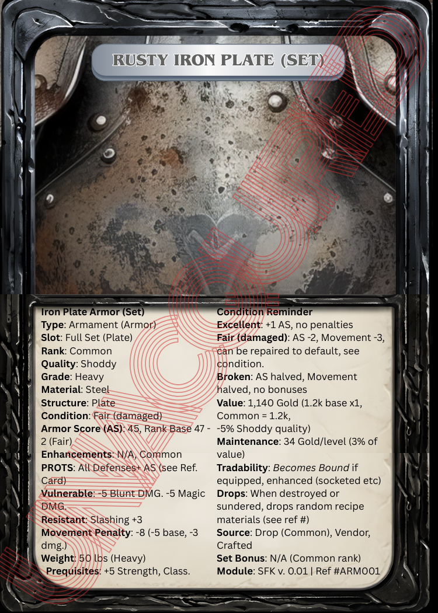
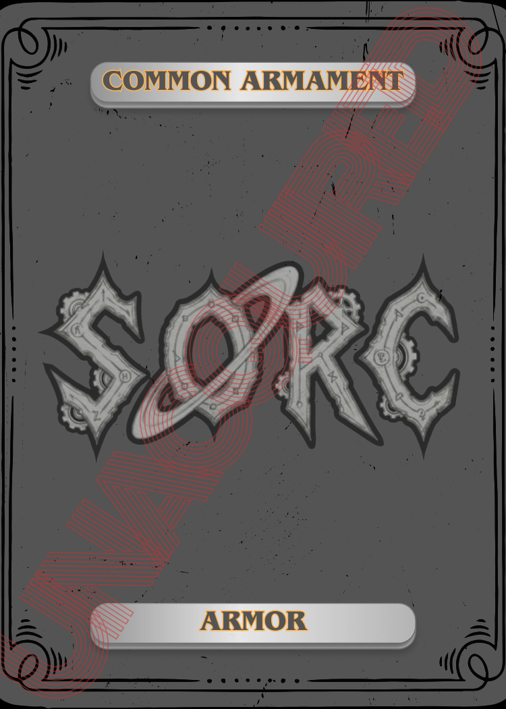
Common Rusty Iron Plate - Armor Card
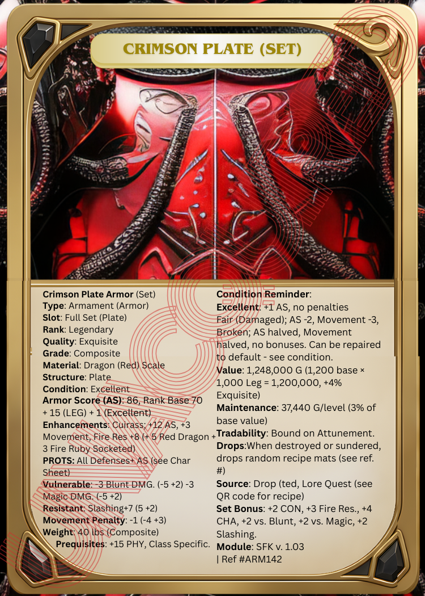
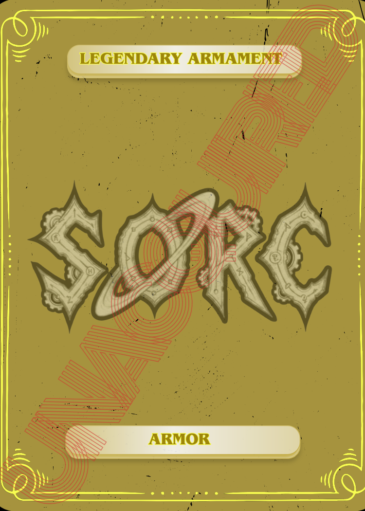
Legendary Crimson Plate - Armor Card
Set Bonus
All armor in the game comes as a complete set - head, pauldrons, cuirass, greaves, boots, and gloves. There are no individual armor pieces. Gloves and boots are the only two pieces that may be replaced. Once broken by replacing gloves and/or boots, the set cannot be restructured - it is permanently broken. Set bonuses are favorably more powerful than typical enhancements.
Set bonuses are structured in three parts: the Main Bonus, the Gloves Bonus, and the Boots Bonus. The Main Bonus is the most powerful and requires all pieces equipped together. The Gloves and Boots Bonuses are each powerful on their own, making the decision to replace either a meaningful trade-off.
Replacing boots grants the stats of the new boots and removes the Boots Bonus entirely - the new boots are treated as any standard boots slot and may be freely enhanced. Replacing gloves grants the stats of the new gloves and removes the Gloves Bonus entirely - the new gloves are treated as any standard gloves slot and may be freely enhanced. Each replacement also reduces the Main Bonus by 25% of its numerical stats. If both are replaced, the Main Bonus loses 50% of its numerical stats.
Only the Cuirass may receive a set-level enhancement.
Only Heroic rank and above may have a set bonus. Common, Uncommon, Rare, Unique, and Elite sets do not include set bonuses.
Bound and Unbound Armaments
| Status | How Acquired | Notes |
|---|---|---|
| Unbound | Drop, Auction | Can be traded within the party at home. Becomes Bound if equipped or enhanced (Common through Unique). Digitally traded cards reset to base level - the new owner must go through the process to restore them. |
| Attuned | Heroic and above | Not Bound until Attuned. Cannot be enhanced until Attuned. Becomes Bound upon Attunement - cannot be traded once Bound. Attunement automatically unattunes from original bearer. Attunement becomes more difficult the higher the rank. |
| Bound | Crafted, Quest, Vendor | Cannot be traded. Bound to the character permanently. |
Note: Bound cards may not be traded under any circumstances. Items attuned to Bosses exist only once per campaign - they are unique and cannot be duplicated. Parties may run multiple campaigns, but not with the same character. Players may encounter the same items in online lobbies - this is expected, as identical armaments can be obtained from different realms.
As covered in Weapons Carried (below), armaments found during an adventure may not be worn or drawn until the next day when characters set their armament choices, but may be carried within encumbrance limits. See Companions for carrying options.
Weapon Base Value
The following base prices apply to Common rank weapons. Rank multipliers and quality adjustments are applied on top of the base price. Common rank weapons cannot be crafted from rare or exotic materials - material rarity must match rank. TAW weapons cost 10% more than their standard equivalent. Higher ranks use the same rank multiplier table as armor.
| Weapon Type | Base Price (Common) | TAW (+10%) |
|---|---|---|
| 1h Melee | 15 Gold | 17 Gold |
| 2h Melee | 25 Gold | 28 Gold |
| 1h Ranged (e.g. Short Bow) | 10 Gold | 11 Gold |
| 2h Ranged (e.g. Heavy Crossbow) | 30 Gold | 33 Gold |
| Caster (Staff, Scepter, Orb, Tome, Dagger) | 20 Gold | 22 Gold |
Weapon Quality
The quality of a weapon is assigned by the GM or determined by its source. Quality affects value only - it does not change damage or combat stats.
| Weapon Quality | Value Change |
|---|---|
| Shoddy | -5% |
| Good | 0% (no adjustment - value stays as Base × Rank) |
| Extravagant | +3% |
| Exquisite | +4% |
| Masterful | +5% |
Value = Base Price × Rank Multiplier. When quality is not Good (0%), apply the percentage adjustment to that result. Good quality leaves the value unchanged. Example: 2h Melee (25 Gold) at Heroic rank (x25) = 625 Gold. At Masterful quality: 625 + 5% = 656.25 Gold. At Good quality: 625 Gold (no adjustment).
Sentimental Value
Sentimental value applies to armaments (weapons and armor) and accessories - charms, rings, amulets, cloaks, and any other item readied or worn on the person. A sentimental item carries a personal bond between the character and the piece. Unlike living companions, an armament or accessory does not return that bond - yet the bond forms all the same. Characters who carry or wear the same piece through years of struggle, loss, and victory develop a deep, almost protective attachment to it. The item becomes an extension of themselves, not just a tool or covering. This emotional tie, whether the character acknowledges it or not, shapes how they perform with it.
Physically, the character grows intimately familiar with the item over time - the exact weight of a blade in the hand, its grip worn to the shape of their fingers, the way it bites and carries through a target, how armor settles on the shoulders after years of wear, the feel of a ring never removed, such as your soul mate's wedding ring. This familiarity sharpens performance in ways no training or upgrade can fully replicate.
For each class level the character has kept a sentimental item readied or worn on the character without removing, it grants a cumulative +1 bonus to its primary stat (damage for weapons, armor score for armor, relevant stat for accessories).
Requirement: The item must remain readied or worn on the character without removing. If the item is taken off or put away, the sentimental value locks permanently at its current level. This does not mean the character no longer loves the item - only that they have grown accustomed to its absence, or chosen a more powerful piece over it. The bond remains, but it no longer grows.
Gifted by the Adored: Any item gifted by a character the player holds an Adored standing with begins with +1 sentimental bonus by default and enters the sentimental process normally from that point.
Rank Progression (Weapons): A sentimental weapon gains one rank every 5 class levels it remains readied on the character's person. Once it reaches Rare, it becomes eligible for enhancement. Rank is tracked on the character sheet and armament card.
Sentimental items are noted on the character sheet. Refer to the GM Codex or specific Module for all instances.
Weapons Carried
Characters may have up to 3 weapons readied at any time - drawn (Main Hand / Off Hand) or sheathed for quick access. Only readied weapons can activate weapon-specific abilities, so make sure you ready weapon sets that adhere to your Ability and Spell choices matching main class, path and later branch. Additional weapons may be packed - stored in a backpack, on certain Companion types, such as draft/pack animals, or in a wagon used for transport, sale, or trade. Packed weapons cannot be drawn or used in combat. All carried weapons (readied + packed) count toward the character's total carry weight; exceeding 50% of capacity triggers Burdened/Encumbered penalties (see Encumbrance, Pg. 5). Swapping the readied set: Characters set their armament and ammo loadout at the start of each long rest (minimum 6 hours). Mid-adventure, characters may drop or pick up weapons from their packed inventory, but cannot ready them for combat use until the next long rest.
Armor Base Value
The following base prices apply to Common rank full armor sets. Rank multipliers and quality adjustments are applied on top of the base price. Base price is determined by structure only - grade and material do not affect the base price formula. Common rank armaments cannot be crafted from rare or exotic materials (e.g. a Common fur armor cannot use whale fur - material rarity must match rank). This keeps base prices consistent across rank tiers. Composite armor price varies significantly by material - Dragon Scale, Mithril, and Adamantium all differ in cost, covered in the GM's Codex. Technologically Advanced Body Armor (TABA) and Technologically Advanced Weapons (TAW) cost 10% more than their standard structure equivalent (e.g. TABA Heavy Plate: 1,200 + 120 = 1,320 Gold).
| Armor Type | Base Price (Common, Full Set) | TABA/TAW (+10%) |
|---|---|---|
| Delicate (e.g. Cloth, Silk) | 5 Gold | 6 Gold |
| Light (e.g. Leather, Hide) | 10 Gold | 11 Gold |
| Medium (e.g. Chain) | 60 Gold | 66 Gold |
| Heavy (e.g. Plate) | 1,200 Gold | 1,320 Gold |
| Dense | 2,000 Gold | 2,200 Gold |
| Composite | 3,000+ Gold (varies by material) | 3,300+ Gold |
| Rank | Price Multiplier |
|---|---|
| Common | x1 (base) |
| Uncommon | x3 |
| Rare | x8 |
| Unique | x15 |
| Heroic | x25 |
| Elite | x200 |
| Legendary | x1,000 |
| Divine | Not for sale |
Value = Base Price × Rank Multiplier. When quality is not Good (0%), apply the percentage adjustment to that result. Good quality leaves the value unchanged. For ranked armaments, value is always determined by structure - not grade or material. A Legendary Composite Dragon Scale Plate uses the same Heavy Plate base (1,200 Gold) as any other Legendary Plate. Example: Heavy Plate (1,200 Gold) at Heroic rank (x25) = 30,000 Gold. At Masterful quality: 30,000 + 5% = 31,500 Gold. At Good quality: 30,000 Gold (no adjustment).
Armor Quality
The quality of crafted armor (Shoddy to Masterful) directly affects its value. Higher quality generally provides better protection and potential for enhancements.
| Armor Quality | Roll d100 | Value Change |
|---|---|---|
| Shoddy | 1-7 | -5% (applied to Base × Rank) |
| Good | 8-30 | 0% (no adjustment) |
| Extravagant | 31-60 | +3%, +1 CHA |
| Exquisite | 61-80 | +4%, +2 CHA |
| Masterful | 81-100 | +5%, +3 CHA |
The armor's rank (Common to Divine) indicates its origin, craftsmanship level, or discovery status and influences its overall condition and potential enhancements. Common rank base Armor Score (AS) by armor type is listed below - all higher ranks add their bonus on top of the Common base:
| Armor Type | Common Base AS |
|---|---|
| Delicate (Cloth, Silk) | 10 |
| Light (Leather, Hide) | 25 |
| Medium (Chain) | 35 |
| Heavy (Plate) | 45 |
| Dense | 60 |
| Composite | 55 |
- Common: (shoddy, good, or extravagant). Base AS as listed above.
- Uncommon: (shoddy, good, or extravagant). +3 to Base Armor Score.
- Rare: (shoddy, good, or extravagant). +5 to Base Armor Score.
- Unique: (good or extravagant). +7 to Base Armor Score.
- Heroic: (good, extravagant, or exquisite). +8 to Base Armor Score.
- Elite: (good, exquisite, or masterful). +12 to Base Armor Score.
- Legendary: (exquisite or masterful). +15 to Base Armor Score.
- Divine: Obtained only by Lore Quests, and very rarely discovered or dropped. Characters must meet Proficiency of Divine Armor. See Attunement rules below. +20 to Base Armor Score.
Weapon Condition
Weapon condition is rolled on receipt and can degrade during play. Broken weapons require a blacksmith to restore - see Armament Repair below. Three conditions apply:
| Condition | Roll d100 | Damage Effect | Notes |
|---|---|---|---|
| Excellent | 81-100 | Full damage, no penalties | No restrictions |
| Fair (Damaged) | 11-80 | -Xd4 damage by rank (see below) | No restrictions |
| Broken | 1-10 | Cannot be used in combat | No enhancement bonuses apply; adds 2 lbs. per rank (warped/collapsed shape) |
| Rank Tier | Fair Damage Penalty |
|---|---|
| Common / Uncommon | -1d4 |
| Rare / Unique | -2d4 |
| Heroic / Elite | -3d4 |
| Legendary / Divine | -4d4 |
Condition in Play: All armament condition - weapons and armor alike - degrades by the same rule. If a character is taking damage during an encounter, it is presumed their weapons were being used defensively or offensively. Condition is resolved at the end of each encounter: if the character was incapacitated (reached 0 Life) at any point, all carried armaments drop one condition tier. If the character was killed, all carried armaments drop one additional tier. Condition does not regenerate when Life does - armaments remain at their degraded condition until maintained at a blacksmith. Armaments cannot be repaired mid-session.
Armor Condition
Armor condition is rolled on receipt and can degrade during play. Broken armor requires a blacksmith to restore - see Armament Repair below. Three conditions apply:
| Condition | Roll d100 | AS Effect | Movement | Notes |
|---|---|---|---|---|
| Excellent | 81-100 | +1 AS | No penalty | No restrictions |
| Fair (Damaged) | 11-80 | -2 AS | Movement -3 sq. | No restrictions |
| Broken | 1-10 | AS halved | Movement halved | No enhancement bonuses apply; adds 2 lbs. per rank (warped/collapsed shape) |
Condition in Play: Armor degrades by the same rule as all armaments - see Weapon Condition above.
Maintenance Fee: Maintenance is a restoration fee - it is only owed when an armament's condition has dropped below its default. If no condition damage was taken during a rest period, no fee is owed. When condition has dropped, the cost to restore it is Item Value × 0.05 per long rest. Maintenance requires a blacksmith and is therefore linked to town or settlement rests. Characters may still take long rests at camp - degraded armaments simply cannot be restored without a blacksmith and their condition carries forward until the party reaches one. Camp rests are fully supported when all armaments are at Fair condition or better, or when the party carries backup armaments to swap readied weapons or donned armor the following morning. Skipping maintenance when condition has dropped means the degraded condition persists - it will not restore on its own. Armaments cannot exceed their default condition without being enhanced.
An Armorer in the party may perform field repairs before a blacksmith is reached, charging the party lower fees. Each repair costs the Armorer one daily action - their action pool is limited and replenishes after rest. Armaments repaired by an Armorer before a long rest do not owe the maintenance fee for that rest. See the GM Codex for Armorer pricing and daily action limits.
Divine armaments have no standard market value and are never sold. Their maintenance fee is listed on the card and is always at least 50% above the equivalent Legendary armament's fee - many Divine items carry significantly higher fees. See the card for the exact amount.
See the Wayfarer section for the Wayfarer Stone - a multi-level tool that allows a party to mark their departure point and return to it provided a light source is present. Higher levels extend its range and capability, making it invaluable for parties venturing deep into unmapped wilderness.
Armament Repair
Broken armaments cannot be repaired mid-adventure and must be held until the party reaches a blacksmith. The cost to repair a Broken armament equals its value at Excellent condition. After repair, condition is re-rolled (d100) - the armament may return only to Fair. Armaments received at Broken condition - whether from a drop, purchase, or gift - cannot be repaired beyond Fair, even with a Guardsmith Scroll. Repair cost also factors in location and isolation; a blacksmith in a remote settlement charges more than one in a major city.
Blacksmiths sell Guardsmith Scrolls, which guarantee the repaired armament returns to Excellent condition and increase the chance of successful Enhancements. Guardsmith Scrolls require Merchant Stance with the blacksmith and are not cheap - cost scales with stance level. See the GM Codex for Guardsmith Scroll pricing and stance requirements.
If an armament is already Broken when the character is incapacitated or killed, it is Destroyed and cannot be recovered. Only Excellent armaments can be Sundered by an Armorer (see Sundering in Enhancements below).
Throwing Weapons and Ammunition
Ammo (arrows, bolts, slugs, etc.) and throwing weapon sets are always tracked as a bundle regardless of count - from a single remaining arrow to a full quiver of 50. Bundle size is noted on the card. The maintenance fee for any ammo bundle is Bundle Value × 0.05 per long rest. If ammo was expended during the day, the replacement cost is the same rate - replacement is the repair in this case. Bundle count resets at every long rest, representing restocking and upkeep. Ammo maintenance is always owed regardless of whether ammo was expended, as bundles require general upkeep. Characters may carry additional ammo bundles beyond their readied loadout by storing extras with henchmen, draft animals, or guardian mounts.
Throwing Weapons (throwing daggers, sudikons, throwing axes) do not occupy a readied weapon slot. The number a character may carry is limited only by carry weight capacity - container type and count must be noted on the character sheet. Throwing weapons may be retrieved after an encounter and count toward carry weight and maintenance fees. They are repaired as any other armament when their condition degrades.
Characters must be proficient through an appropriate class (such as Fighter or Marksman) to use throwing weapons efficiently. Out-of-class characters may attempt to use them but do so with combat penalties.
Armor Grades & Materials
Armor is categorized into six main areas: condition, quality, rank (all mentioned above), grades, materials, and structures. These factors collectively determine its default weight, armor score, and overall characteristics.
The armor grade defines the overall strength and durability of the armor. It indicates how well-protected the wearer is and influences its weight and mobility. The materials used to craft armor influence its strength, weight, flexibility, and magical properties. Ranging from mythical metals to natural fibers, each material offers unique advantages suited for different warriors, environments, and combat styles.
Material Compatibility: Each armor grade is associated with specific materials suitable for its design, strength, and purpose. For example, Mithril is typically used in lightweight and flexible armor types such as Light Armor and Delicate Armor, and not suited for heavy or dense armor grades like Dense or Heavy. Materials are restricted to particular armor grades, and cannot be used interchangeably across all grades. This ensures consistency in armor crafting and maintains the distinctiveness of each grade's characteristics.
The structure of the armor describes its style and pattern, including design elements like plate, beaded, stitched, scale, or studded configurations. These structural choices affect both the appearance and functional properties of the armor.
Characters' movement is affected by their armor type and condition. Movement penalties and bonuses are measured in squares (sq.) - each square equals 5 ft. Base character speed is measured in feet (ft.); divide by 5 to get squares for tile movement. Each armor type carries a specific movement penalty in sq. (see Armor Types table in the Combat section). Additional penalties from armor condition and bonuses from buffs, gear, or abilities stack accordingly.
For example, a character with a base speed of 30 ft. (6 sq.) wearing full plate armor (-5 sq.) moves 1 sq. (5 ft.) per turn. If the armor is broken, an additional -1 sq. is added for a total of -6 sq. Conversely, movement bonuses (e.g., +2 sq.) are added separately and can offset or negate penalties if specified.
While characters can still move with penalties or bonuses, if their armor or gear is broken or heavily encumbered, they may be able to move but cannot fight effectively or at all, depending on severity. Heavy encumbrance that exceeds the character's capacity results in total incapacitation - meaning they cannot move or fight at all until their load is reduced. Additionally, damage to gear, such as broken weapons or armor, can severely impair combat. For example, a broken armament prevents a character from fighting, regardless of their movement ability.
Resting
Long Rest: A long rest is a period of 8 hours of uninterrupted downtime in a safe location - a camp, settlement, inn, or secured shelter. During a long rest, characters sleep, eat, tend to gear, and recover from the day's exertion. A long rest:
Fully restores Vitality Resets Endurance Chips to maximum Triggers maintenance fees for any armaments whose condition dropped (requires blacksmith - see Maintenance above) Allows armor sets to be doffed and re-donned Permits spell preparation and other daily resource resets
A long rest cannot be taken in active combat zones, hostile wilderness without a secured camp, or while suffering from certain conditions (GM discretion). Interrupted long rests (combat, ambush, environmental disaster) do not count and must be restarted. Short Rest: A short rest is 6 hours during which the party establishes a watch rotation, sharing guard shifts among members. Short rests may be taken in uncertain areas and do not require a secured location. During a short rest, Vitality replenishes at the Spirit regeneration rate (3 chips per hour per Spirit point). Nothing can be donned or readied during a short rest - characters carry whatever was equipped going in. No light activities are permitted (no crafting, no spell preparation, no equipment swaps). Maintenance requires a blacksmith and is not available during a short rest unless one is present in the vicinity. A short rest interrupted by combat or ambush must be restarted from the beginning.
Cloth armor's default AS is 0, but it can be enhanced to improve its AS without incurring movement penalties. Cloth is often used as under armor or for concealment, and such items (faulds, gambesons) may also be enhanced within their respective caps.
| Grade | Description | Materials | Structures |
|---|---|---|---|
| Composite | The most legendary and powerful armor, imbued with magical or divine properties. Composite weight varies by material - lighter exotic materials such as Mithril and Dragon Scale weigh significantly less than denser composites like Adamantium or Titanium. | Dragon Scale, Mithril, Adamantium, Vibranium, Eldritch Obsidian, Celestial Bronze, Starmetal, Titanium | All types: Plate, Chainmail, Scale, Studded, Robes, Enchanted, Ritual, Energy Shields, Force Fields, Exosuits |
| Dense | Heavy-duty armor designed for maximum protection in the most dangerous environments. | Osmium, Iridium, Platinum, Tungsten, Ruthenium | Heavy types: Plate, Full Body, Power Armor, Exosuits, Reinforced Chainmail |
| Heavy | Bulky, high-coverage armor suited for front-line combat and extreme threats. | Chromium, Steel, Inconel (nickel based), Hadfield (magnesium based) | Plate, Scale, Chainmail, Power Armor, Battle Suit, Tactical Armor |
| Light | Flexible and agile armor ideal for stealth, reconnaissance, and quick movement. | Mithril, Leather, Hide, Fur, Bone, Wood | Studded, Chain, Hybrid Light Gear, Stealth Armor, Tactical Gear |
| Delicate | Lightweight and finely crafted armor for ceremonial, stealth, or concealment purposes. | Hemp, Silk, Cloth, Nylon | Robes, Ceremonial Attire, Stealth Suits, Lightweight Body Armor |
Armor Type Vulnerabilities & Resistances
Vulnerabilities and resistances directly adjust your AS for that attack type. Vulnerability: Subtract the penalty from your AS. Resistance: Add the bonus to your AS.
| Armor Type | Base AS | Vulnerable To (AS Penalty) | Resistant To (AS Bonus) | Movement Penalty (sq.) | Weight |
|---|---|---|---|---|---|
| Delicate (e.g. Cloth) | 10 | Slashing, Ranged (-4) | Magic (+2) | 0 sq. | 5 lbs |
| Light (e.g. Leather) | 25 | Piercing (-3) | Ranged (+2) | -1 sq. | 15 lbs |
| Medium (e.g. Chain) | 35 | Blunt (-3) | Piercing (+2) | -3 sq. | 30 lbs |
| Heavy (e.g. Plate) | 45 | Blunt, Magic (-5) | Slashing (+3) | -5 sq. | 50 lbs |
| Composite (e.g. Dragon Scale) | 55 | Corrosive (-4) | Ranged (+4) | -4 sq. | 40 lbs |
Weapon Type DMG Mods
These flat damage modifiers apply when a weapon hits its target. Positive values add to total damage dealt; negative values reduce it. These modifiers stack with rank, Trait bonuses, and enhancements. Refer to the GM Codex or specific Module for all instances.
vs. Armor Types
| Weapon Type | Cloth | Leather | Chain | Plate | Composite |
|---|---|---|---|---|---|
| Slashing | +4 | +2 | -2 | -3 | -4 |
| Blunt | -2 | 0 | +3 | +5 | +3 |
| Piercing | +2 | +3 | -2 | 0 | -2 |
| Ranged | +4 | -2 | 0 | -4 | -5 |
| Magic | +2 | 0 | +2 | +5 | +4 |
| TAW / Energy | +3 | +2 | +2 | +2 | -3 |
vs. MAC Types
| Weapon Type | Beast | Undead | Construct | Spirit |
|---|---|---|---|---|
| Slashing | +3 | -2 | -4 | -4 |
| Blunt | +1 | +4 | +4 | -4 |
| Piercing | +2 | -2 | -3 | -4 |
| Ranged | +2 | 0 | -2 | -4 |
| Magic | 0 | +4 | +3 | +6 |
| TAW / Energy | +1 | +3 | +5 | +3 |
Refer to the GM Codex or specific Module for all instances.
Technologically Advanced Body Armor (TABA)
TABA uses materials exclusive to the last six planets. Although very little is known about the last, thirteenth planet, Tredici. TABA is lighter than standard armor of the same grade, providing lower movement penalties - some grades grant movement bonuses (see TABA Stats table below). However, TABA is vulnerable to melee attacks and TAW ranged attacks - its advanced materials are not designed to withstand direct physical strikes or energy-based projectiles. Melee and TAW ranged attackers gain a +5% bonus to their base hit rate against TABA regardless of grade, Standard ranged attacks (bows, crossbows, slug launchers) do not gain this bonus. TABA is best suited for ranged and tech-based combat roles. TABA can be modified with a wide variety of gadgets - including thrusters, grappling hooks, cloaking modules, shield emitters, and more - making it highly adaptable for specialized roles. See the GM's Codex for available modifications and compatibility by grade.
| TABA Grade | Base AS | Vulnerable To | Resistant To | Movement (sq.) | Weight |
|---|---|---|---|---|---|
| Delicate | 10 | Melee, TAW Ranged (+5% hit) | Standard Ranged (+2 AS) | +2 sq. | 2 lbs |
| Light | 25 | Melee, TAW Ranged (+5% hit) | Standard Ranged (+2 AS) | +2 sq. | 7 lbs |
| Heavy | 45 | Melee, TAW Ranged (+5% hit) | Standard Ranged (+3 AS) | -2 sq. | 20 lbs |
| Dense | 50 | Melee, TAW Ranged (+5% hit) | Standard Ranged (+3 AS) | -3 sq. | 28 lbs |
| Composite | 55 | Melee, TAW Ranged (+5% hit) | Standard Ranged (+4 AS) | -1 sq. | 18 lbs |
Note: TABA movement values replace standard armor movement penalties for the equivalent grade. Gadget modifications (thrusters, grappling hooks, etc.) may further alter movement. All movement values are in squares (sq.) - each square equals 5 ft. Divide base speed by 5 to get squares.
Excerpt from Into the Uncharted Worlds of Essentia: The Tredici are humanoid creatures that actually resemble humans, but due to the nature of their planet's environment, have different features. They seem to be more Technologically advanced than their neighbors, the Omne, however are populated by theologian beliefs and are innate masters of psionic abilities.
| Grade | TABA Variants |
|---|---|
| Composite | Phalanx Mantle (Ceramite-Polymer), Sentinel Plate (Titanium Mesh), Vanguard Array (Carbide Laminate), Spectre Harness (Polyflex Laminate) |
| Dense | Obelisk Shell (Tungsten Matrix), Titan Ward (Osmium Plate), Gravitas Cloak (Dense Nanoalloy), Bulwark Vest (Plasteel Core) |
| Heavy | Ironclad Harness (Titan Alloy), Juggernaut Plate (Boron Carbide), Bastion Array (Ballistic Composite), Thunderbound Vest (Impact Gel Layer) |
| Light | Shadowstep Garb (Nano-Fiber), Wisp Array (Light Alloy Mesh), Quickstride Mesh (Polyflex Laminate), Swiftguard Vest (Microfiber Mesh) |
| Delicate | Whispercloak (Silicar Thread), Seeker Array (Flexweave), Mirage Harness (Reactive Polymer), Tasker Mesh (Microfiber Mesh) |
| General / Advanced | Arcguard Shell (Nano-Carbon), Radiant Mantle (Photon Mesh), Pulse Array (Smart Polymer), Flux Harness (Morphic Gel) |
Weapon Cards
Below are the sets of punchout Common Weapon Cards included in this box set.
Common rank weapon attack values are calibrated so that a baseline attacker (no character modifiers) hits each armor type at the rates listed in the Base Hit Rate table in the Combat section. All weapon types share the same base hit rates - advantages and disadvantages between weapon types come from armor Vulnerabilities and Resistances, not from the base rate. A blunt weapon benefits from chain's vulnerability to blunt; a piercing weapon benefits from leather's vulnerability to pierce. These interactions are listed on each weapon's card and in the Armor Types table.
| Category | Weapon Cards |
|---|---|
| Martial Melee | 1h Hammer (main), 2h Hammer, 1h Staff, 2h Quarterstaff, 1h Mace, 2h Mace |
| Martial Ranged | 1h Short Bow, 2h Heavy Crossbow, 2h Slug Launcher |
| Caster Weapons | 2h Staff, 1h Magic Scepter, 1h Orb, 1h Tome, 1h Magic Dagger |
| TAW Melee | 1h Energy Dagger, 1h Plasma Knife, 1h Shock Baton, 1h Nano-Edge Sword, 2h Nano-Edge, 1h Pulse Blade, 2h Pulse Blade |
| TAW Ranged | 1h Laser Pistol, 1h Plasma Thrower, 1h Energy Bow, 1h Throwing Grenade, 1h Shock Dart, 2h Plasma Cannon, 2h Railgun |
Technologically Advanced Weapons (TAWs) are modern or futuristic Armaments that utilize cutting-edge technology, engineering, and scientific principles to deliver superior firepower, precision, and versatility. TAW are inventions from races (including human species) native to planets Octavo, Angeligla, Corpus Caeleste, Undecimus, Omne Malum, and Tredici. Although not as technologically inclined as the people of the aforementioned planets, people native to Zail have inherited the Ability to manufacture TAG (technologically advanced gear). There are no restrictions on gear, or any other items, unless the item says specifically that it's attuned or bound to a particular entity. That's not to say, some items aren't more rare than others depending on the players' location.
Lore Cards
Lore Cards come with every box set. The rank of Lore Cards included is dictated by the level of the module - for instance, Hold's Keep Valley v. 0.01 is for levels between 1 and 5. Lore Cards lead players to special Lore Quests built into the module - the Card is what guides the party to them, with the highest-rank Cards pointing to the most exclusive and challenging quests in that module.
Reminder: Each module comes with punchout Cards of the rank matched to its level (see table above). A level 1-5 module includes Common Cards, a level 5-10 module includes Uncommon Cards, and so on. Lost Cards can be downloaded for free online using the box set code, or ordered through our catalog for a fee.
As with all SORC Cards, each Lore Card is printed on matte/designed card stock and includes the respective stats and an image of what it represents, along with a QR code that provides access to its digital version. The QR code must be refreshed periodically to maintain digital access, so players should keep track of them and avoid losing. Players may trade Cards that are †not useful to them, such as plate when they can only wear leather. This also ensures any new owner of the Card maintains digital access.
†Keep in mind, in SORC you can choose various classes, so they could acquire the proficiency to wear plate armor. Also note characters have a class Ability cap, so there's a fine line between power and diversity.
Lore Cards lead parties to special quests called Lore Quests. Lore Quests are Elite quests already built into the module - the quests and their rewards are there, and the Lore Card is what guides the party to them and triggers the item drop. If you get a Lore Card, you'll be led to the quest and eventually you'll discover the Lore Card that the GM acquired in the box set. Just like the Common punch out Cards that always come as a set in the box, the GM holds onto Lore Cards until the party earns them. The GM will lead the players to the area of which to achieve the goal.
For example: Rare: Igor's Helm (of STR) - Igor the Ogre Chief. The party would need to retrieve the Helm from Igor, an ogre chieftain, buried deep below the snowy forests of Mt. Olympiad. The party is led to a rogue Vanwa camp that blends hidden in nooks between hard to reach tight canyon slots above the mountain's base. The Vanwa are at war with the ogres in the area and the camp is an expedition camp in search of Igor, who is the chieftain of the buried Mountain Ogres.
Lore Quests and Lore Cards are both relevant to the level of the module and already built into it - the Card is simply what puts the party on the path to finding them. If the source of the Lore Card's element is gone, e.g. if Igor has already been killed, the party will find the Card in an alternate manner explained in the module or improvised by the GM. The goal is to get the Lore Card to the party but to also make it fun, exciting and challenging.
Example: If Igor is already dead or missing, the GM will begin a new narrative to assist the party in finding the Helm of STR. There is a Lore Quest for every possible Lore Card that may drop. Moving forward, without any spoilers, the Vanwa offer handsome rewards for proof that Igor is dead, and with either thought or combat, you'll have the prize. Lore Cards aren't always dropped, they may be gifted by NPCs, discovered or acquired in other ways.
Upon defeating Igor, the helmet drops. All members that can wear the plate helm would roll for it, and if nobody can, everyone rolls for it. The winner of any members that can wear plate is now empowered by the helm. Players awarded whose characters cannot wear the helm can either trade it online for something they can use, or save it for potential later use.
The maximum rank a character can achieve is limited by their level. When designing box sets or awarding Lore Cards, do not include items requiring a rank higher than what the highest level in that set allows:
- Levels 1-3: Maximum Lore Card rank is Commoner.
- Levels 4-7: Maximum Lore Card rank is Adventurer.
- Levels 8-14: Maximum Lore Card rank is Hero.
- Levels 15-24: Maximum Lore Card rank is Elite.
- Levels 25-30: Maximum Lore Card rank is Master.
This system allows players to keep their Cards physically at home and trade physical Cards with real life friends when suitable at the table. For instance, if a paladin receives a leather armor set, he can gift it to someone in the party than would benefit from it, or sell it for gold and the GM takes it. Once traded on the server, the digital version of the Card changes, and the QR code on the physical Card can no longer be used to refresh.
Note: SORC is first and foremost a TTRPG played AT the table. Written content, such as Modules, Maps, Cards and other text included in the box set can be obtained digitally using the Box Set Code. A lighter free PDF version of the game is also available, and includes paper versions of cut out Cards, the rules and anything else that allows people to play SORC. Free players can also join campaign lobbies, but cannot host them as stated in SORC Beyond. Players that want to avoid online altogether can re-order elements through the catalog included in the box set.
Item Cards
Item Cards can be obtained through different means, such as discovery, purchasing from shop vendors, trading, gifting, and more. Each box set includes a variety of item Cards that are relevant to the module and its designated levels. Items like consumables (such as healing pots and materials) and collectables; hobby items, artifacts, rune stones, quest items, hunter's skins and meat etc - are represented by individual Cards, and are often stacked. For example, a healing potion Card might contain 10 potions on its description, preventing the need of holding 10 separate Cards. You can stack or combine them, as long as your character has the strength or space to manage carrying them. These cards can also be kept in †storage, your character's home, or wherever. The Player holds the Card for his character until it is used, sold, lost or when the campaign, or character, retires.
†Drafts, wagons, hirelings etc. can help here. You can also store items in storage, vaults or your home.
Item Cards - Special
Special items are Unique and often Rare objects that can influence your character or the game world. These include event tickets, quest items, items that alter your appearance or attire, powerful artifacts, scroll Spells, potions that grant buffs, and specialized Armaments. They often carry lore, special effects, or functions that can significantly impact your adventures or character customization.
Encounter Cards
Encounter Cards cover every being, hazard, phenomenon, or feature the party may face - from monsters and NPCs to traps, environmental conditions, and roaming threats. Each card contains the stats, abilities, and characteristics needed to run that encounter at the table without sending the GM back through the book. Modules are built alongside their Encounter Cards - the module specifies which cards are placed in which areas, and the same card can be reused across multiple locations throughout the campaign. Not every element in a module is card-represented; modules contain full text content, and GMs may also place cards at their own discretion. See the GM's Codex for expanded guidance on card placement and custom encounter design.
There are several types of Encounter Cards, each representing a specific category of encounter.
Encounter Card Drops: All Encounter Cards include drop information - loot, resources, currency, or materials that can be obtained from the encounter. Drop chances and quantities are listed on the card. See the module for specific drop percentages.
Encounter Token Threshold: Every Encounter Card has a Token Threshold printed on the card - the maximum number of Encounter Tokens that can be assigned to it, as defined by the module. For Mob Encounter Cards, tokens represent the number of individual enemies present. For Mechanical Encounter Cards, tokens represent the number of attempts characters have at that mechanism. Once the Threshold is reached, no additional tokens may be added without GM direction.
- NPC Encounter Cards: Specifically detail non-player characters, such as quest givers, faction leaders, vendors, or other story-driven figures. These cards include relevant stats and abilities, helping GMs quickly reference and run interactions or challenges involving NPCs.
- Boss Encounter Cards: Represent powerful, unique adversaries that serve as major challenges or story milestones. They include Life, Abilities, Armor, and Attacks - no Traits or Attributes - to make these encounters distinct and memorable.
- Mob Encounter Cards: Represent either one Mob, or groups of similar enemies encountered together, such as squads of guards or packs of creatures. Each card uses Encounter Tokens to track the number of individual enemies present and manage their status during play.
- Companion Encounter Cards: Represent allies, pets, mounts, or hirelings that can accompany and assist player characters. These cards provide relevant stats and abilities for each companion, making it easy to manage their role in the adventure.
- Mechanical Encounter Cards: Represent non-living interactive elements built into the module - traps, locked doors, pressure plates, combination locks, puzzles, and other hazards. These cards are always module-specific; the module assigns each card to its area and defines its Token Threshold. Each token on a Mechanical Encounter Card represents one attempt characters have at that mechanism - when all tokens are spent, the mechanism is permanently resolved and no further attempts may be made. Mechanical Encounter Cards can be reused across multiple areas of the campaign as directed by the module.
- Biological Encounter Cards: Cover living flora and fauna, from small critters to giant beanstalks. These cards represent natural entities that may be hazardous or beneficial, depending on their unique properties or effects.
- Environmental Encounter Cards: Represent natural features and phenomena such as terrain, weather, earthquakes, or tornadoes. These cards describe environmental effects that influence gameplay based on the setting.
Wandering Encounters: Every module includes a Wandering Encounter pool - a set of Encounter Cards organized by region or zone. The GM rolls D100 once per hour of travel and once per rest watch. If the result meets or exceeds the Wandering Threshold for that zone, as printed in the module, a wandering encounter is triggered. The GM draws from the appropriate regional pool and runs the encounter as directed. Once resolved, the card returns to the pool and may trigger again. Not every zone has a wandering pool - the module specifies which areas are active and which cards belong to each pool. Wandering encounters are at the GM's will; thresholds may be adjusted, triggers skipped, or encounters called outside of the roll as the narrative demands.
Drops, Loot and Discovery
Items obtained through loot, discovery, and crafting are determined by dice rolls, universally D100. Their rank, and in many cases condition and quality, all determining value, are tied to thresholds set by their respective sources' Ranks.
Items acquired through other means, such as purchasing from vendors, trading, questing, and gifting, are usually obtained as written in the module, or often at the discretion of the GM.
The higher the rank, the more extraordinary the circumstances required to obtain it - not just the roll, but the encounter itself.
For example: Asmodeus' "Crown of Darkness" is a Divine item that not only has an extremely rare chance of dropping, but it's rare to even face †Asmodeus, let alone earn the chance of rolling for his loot.
†Asmodeus, as all higher powers may not be killed, but you can still earn loot from these encounters, only available through special Divine Lore Quests.
There are examples of Rank mentioned throughout this book, but Rank is covered more extensively in the GM's Codex.
Item Ranks & Drop Rates
| Rank | Default Drop Chance |
|---|---|
| Common | Most entities - rank-dependent (see below) |
| Uncommon | ~10% |
| Rare | ~7% |
| Unique | ~6% |
| Heroic | ~5% |
| Elite | ~4% |
| Legendary | ~3% |
| Divine | ~0.01% |
Most entities will drop Common as long as your character's rank and level is reasonably close to the target's. As your character increases in rank, the odds of items dropping will decrease. Quest items will always have a chance to drop, but other items will drop less frequently. Materials dropped by lower level targets will drop at the same rate, but more commonly at Shoddy quality - refer to the Rank Differential Loot Scaling table below.
Rank Differential - Loot Scaling
| Rank Gap | Effect |
|---|---|
| Within 1 rank | Full drop rates apply |
| 2 ranks above target | Common item drops reduced by 50%; materials drop at Shoddy quality |
| 3 ranks above target | Common items no longer drop; quest items retain their chance; materials drop at Shoddy quality |
| 4+ ranks above target | No item drops; materials only, at Shoddy quality; quest items still have a minimum chance |
Level acts as a secondary modifier within the same rank - if a character is 5 or more levels above a same-rank target, apply the next tier down. Quest items always retain at least a minimum drop chance regardless of rank gap, as defined on the card or in the module.
Loot rank is determined by the Creature's Rank. Each Creature will carry items of its own rank and all ranks below it, but the likelihood of obtaining loot decreases as the Creature's rank increases. If the Creature's level and rank are significantly below the attacker's, it will likely drop nothing unless part of a quest.
Laws of the Land
Essentia is a world governed by laws. Players who break them face consequences - fines, bounties, imprisonment, faction standing loss, or worse, depending on the severity and the jurisdiction. Ignorance of the law is not a defense.
Fighting in Town: Combat within town or city limits is strictly forbidden. Attacking another character, NPC, or creature inside a settlement will draw the attention of town guards and result in immediate consequences. Vendors, traders, and citizens are protected by law - killing a vendor is a serious crime, even if they drop their wares and inventory upon death.
Banditry and Road Crimes: Attacking or stealing from travelers, especially on roads and trade routes, is forbidden and considered banditry. Roads are protected under common law across most factions. Players caught robbing or assaulting travelers face bounties and hostile faction standing.
Consequences: Law enforcement is handled by guards, faction militias, or bounty hunters depending on the region. Crimes are tracked. See the GM's Codex for jurisdiction rules, crime tiers, and consequence tables.
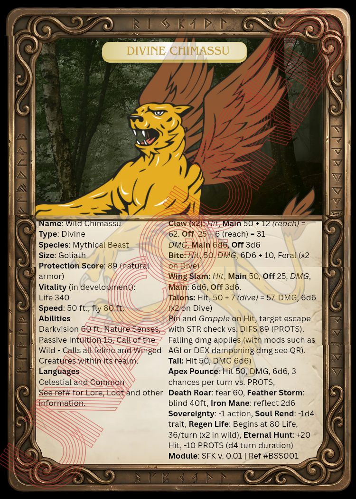
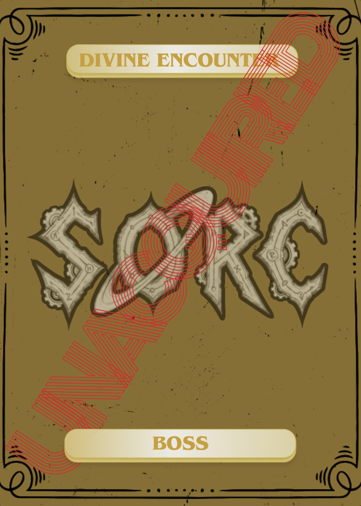
Divine Wild Chimassu - Boss Encounter Card
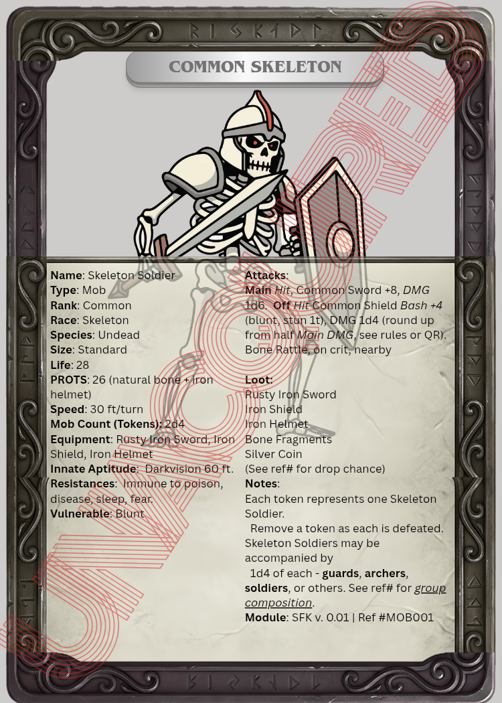
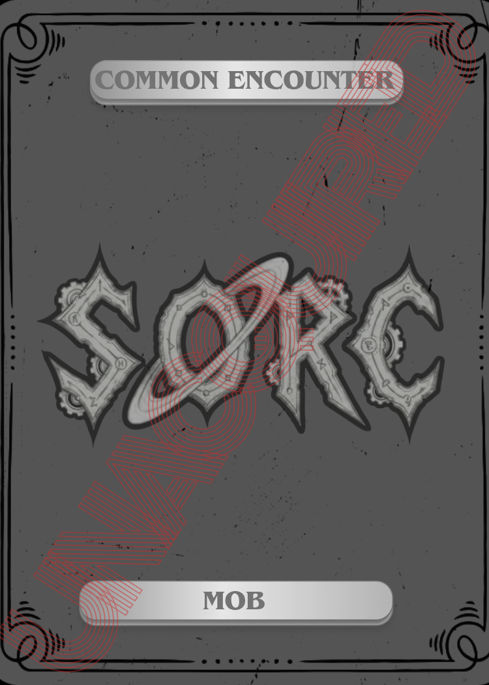
Common Skeleton Soldier - Mob Encounter Card
Companion Cards (Encounter)
Companions are; pets, guardians, angelics, fellowships (NPCs), temps (hirelings, summons etc.), drafts, ruminants, and mechanical. Mechanical companions are constructed companions with no biological needs. Subtypes include: Vehicular (remote-controlled or piloted machines that also serve as transport), Droids (autonomous task-built robots), Automatons (mechanical constructs, often arcane-powered), Androids (humanoid machines capable of social interaction), and Drones (small aerial or surveillance units). Mechanical companions follow the same bonding, upkeep, and mood rules as organic companions, but their upkeep consists of maintenance, charging, oil, and repair rather than food and rest. There are no Averse companion types; races have Favored companion categories that bond faster and cost less to maintain. They have their own Stats that adhere to the Companion's meaningful role. These Stats are innate Stats and never change.
Characters have four Companion slots - one of each size: tiny, small, standard, and goliath/behemoth. The goliath/behemoth slot is a shared slot - a character may have either a Goliath-sized or Behemoth-sized companion in this slot, not both. Up to four Companions can accompany a character at one time. Tiny Companions are the smallest, typically insects, bugs, or very small creatures. Small Companions are roughly the size of a rodent or small bird. Standard Companions are humanoid-sized up to the size of a large horse or similar creature. Goliath Companions range from large humanoid-sized creatures to the scale of a Centyr (4 spaces). Behemoths can reach colossal sizes and are extremely rare. These allies support in combat, travel, and exploration, with Unique Abilities - adding depth to gameplay and character interactions. Each Companion Card may or may not be restricted to character class and race. If your Common or Uncommon Companion dies, you lose them permanently - they cannot be resurrected and do not go to the boneyard.
Companion Names and Nicknames
Every Companion has a generic Name that describes what they are - for example, Moorback Goat. This name is fixed and comes with the Companion Card. Characters may give their Companion a Nickname of their choosing. Common and Uncommon Companions will respond to any nickname given. Companions of Rare rank and above already carry their own name and have their own identity - they may or may not accept a nickname given by the character. A Companion that does not accept a given nickname will not respond to it. Whether a Companion accepts a nickname is at GM discretion, including what roll to use and which dice. Fellowships, which are NPCs, always carry a name of their own and follow the same nickname rules - they may accept a nickname but will not respond if they do not. These naming rules do not apply to summons such as whistle-calls, scroll summons, or other temporary conjurations.
Common Companions are easier to acquire, but characters may develop bonds with their Companions, and may want to be careful with their lives, eventually providing them a safe keep, like a home. Common and Uncommon are the Companions that always come in box sets as punch out Cards. Companions of rank Rare and above can be resurrected the same way Characters can (see dying and death below). Until resurrected, passing Companions of Rare rank and above go to the boneyard.
Companion Lifespans: Companion lifespans vary by rank. Common and Uncommon Companions have the shortest natural lifespans and cannot be resurrected upon death. Rare Companions live significantly longer - decades to centuries depending on their type. Epic Companions have extended lifespans measured in centuries. Legendary Companions may live for many centuries. Unique Companions are extraordinarily long-lived. Divine Companions are immortal and do not die of natural causes. Specific lifespans for each Companion are listed on their card.
Companions need rest, care, and proper nourishment. While they can survive without your direct care, their performance is influenced by their overall condition. They have three tiers of performance: Basic, which provides standard capabilities; Intermediate (Int.), offering enhanced Abilities and resilience; and Advanced (Adv.), where the Companion reaches peak performance with maximum effectiveness in travel, combat, and support roles. Your management and care determine which tier they operate in during your adventures.
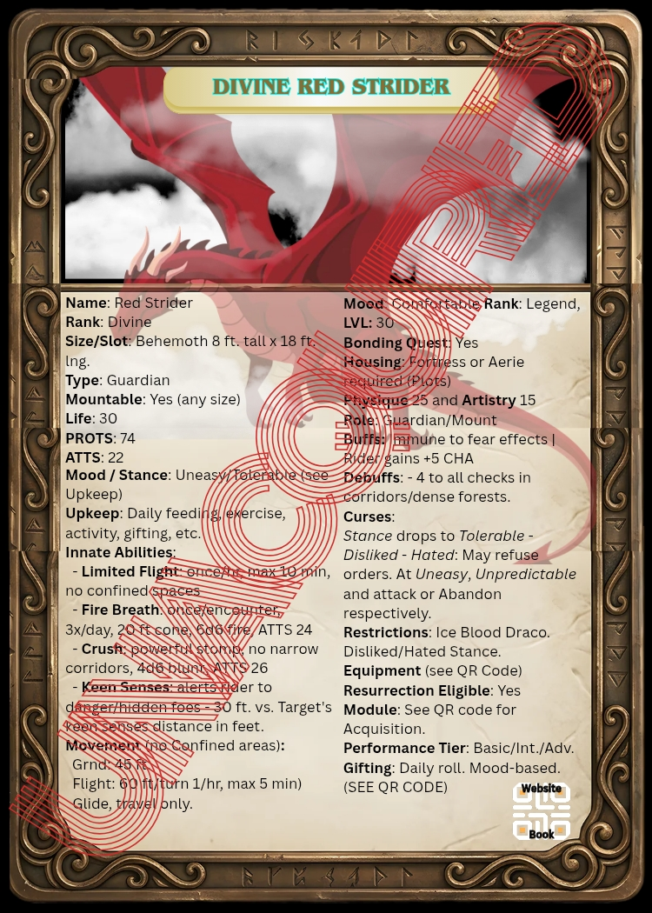
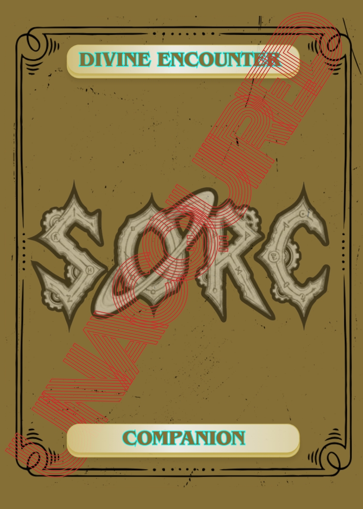
Divine Red Strider - Companion Card (Guardian)
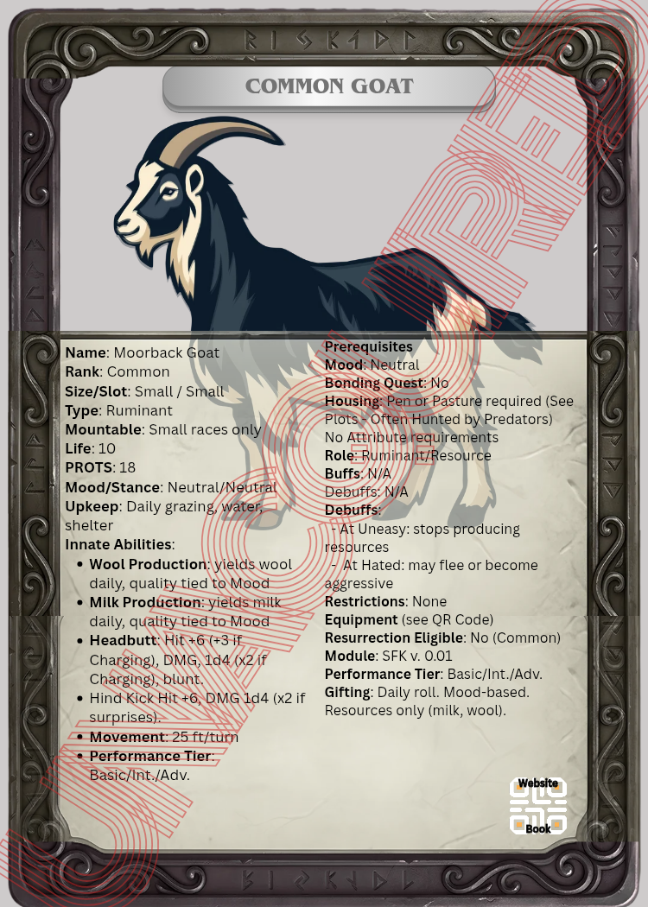
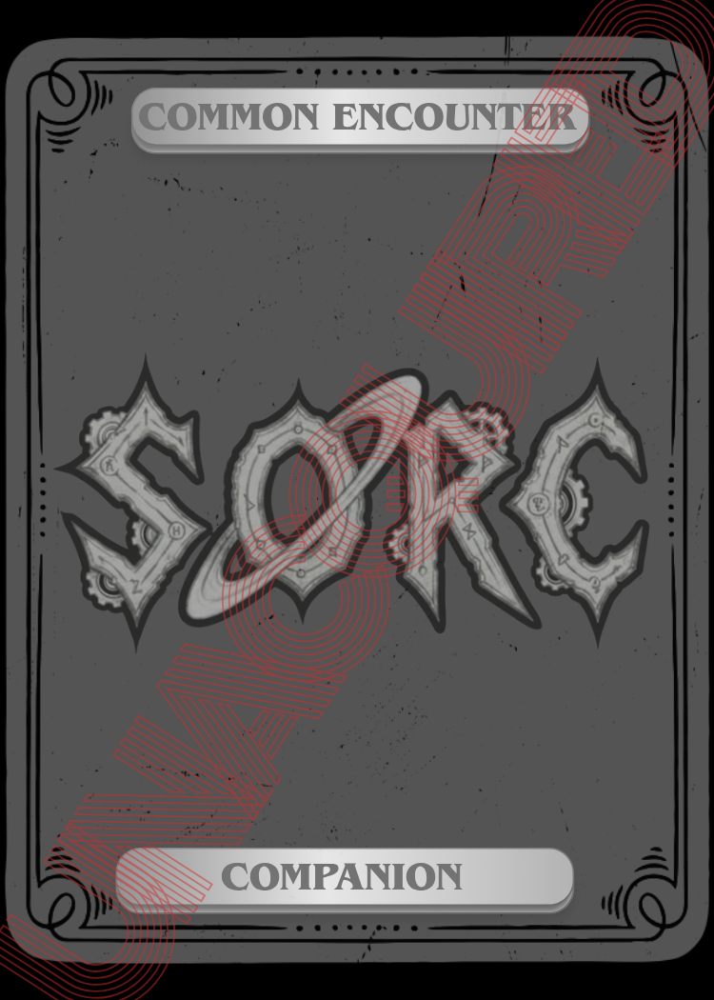
Common Moorback Goat - Companion Card (Ruminant)
Companion Vitality
Companions, Bosses, and Mobs only have Life vitality. They do not have Mana, Stamina, or Endurance and do not expend them. Only Life can be depleted. They also do not have Traits or Attributes - their Abilities are innate and built into their card, requiring no trait or attribute prerequisites. What they have is: Life, Abilities, Armor, and Attacks.
Mood and Stance
Each Companion tracks two values: Mood and Stance. Mood reflects the Companion's current emotional and behavioral state. Stance reflects the Companion's relationship with and attitude toward its owner or handler - from deeply bonded to hostile. Both are tracked together on the Companion Card and directly influence buffs, debuffs, and behavior in play.
Mood Scale: Distressed - Uneasy - Wary - Neutral - Content - Comfortable - Tranquil. Distressed is the lowest mood, Tranquil is the highest. Buffs shared between Companion and character are tied to Mood and Stance together - the higher both are, the greater the shared benefit.
Mood Changes: A Companion's mood cannot shift - up or down - without a Bonding Quest first. Upkeep alone does not change mood. The Bonding Quest is the trigger for any mood progression.
Stance Scale: Cherished - Adored - Respected - Neutral - Tolerable - Disliked - Hated. Companions do not sabotage their owners. At Disliked, a Companion may become unpredictable and refuse orders. At Hated, a Companion may attack or abandon the character entirely. Companions require a good stance before they will interact with a character.
Upkeep
Companions require daily upkeep to maintain their Mood and Stance. Upkeep includes feeding, exercise, activity, and gifting. Neglecting upkeep causes Mood and Stance to decline over time. The specific upkeep requirements for each Companion are listed on their card.
Gifting
Gifting works both ways between Companions and their owners. Characters at Comfortable or Tranquil mood with their Companion may receive unsolicited gifts - items, resources, or useful finds - rolled daily. Companions gift based on mood: the higher the mood, the greater the frequency and quality. There is a cap of 1d4 gifts per day. See the Gifting Chart for details. Characters may also gift their Companions as part of upkeep, which contributes to mood and stance over time.
Companion Equipment and Gear
Companions can be equipped with gear appropriate to their type and size. Armor for Companions provides PROTS bonuses and varies by type - scale barding, hide wraps, plate barding, chain mail coverings, and more, each suited to different Companion builds. Saddles are available for mountable Companions and improve rider comfort and stability, but custom or travel saddles increase travel duration. Signal whistles can be used to call a Companion home from a distance. Equipment for Companions comes separately and is not included on the Companion Card by default - see QR Code for available equipment.
Safe Keeps and Home Duties
Characters can provide their Companions with a safe keep at their home or property. Safe keep types vary by Companion: stables for mounts and drafts, kennels for pets and guardians, aviaries for flying Companions, enclosures for large or exotic creatures, and pens or pastures for ruminants and draft animals. Companions kept at home can be assigned duties during downtime, including guard duty, draft labor, ruminant resource production (milk, wool, eggs, etc.), and other roles suited to their type. Duties are determined by Companion type and the character's property setup. Ruminants and other farm animals kept on a plot are vulnerable to predators - wolves, large birds of prey, and other wildlife may hunt them during the character's absence. Guardians assigned to the plot actively protect it and its animals from predators and other threats.
Companion Movement - Flight and Glide
Flying Companions have two distinct movement types. Flight is combat movement - measured in ft./turn and subject to the restrictions listed on the Companion Card. Glide is travel movement - used out of combat for long-distance travel, measured in travel time rather than ft./turn. Saddles may affect glide travel duration. Neither flight nor glide can be used in confined spaces unless the Companion Card states otherwise. Rider weight and gear affect travel range and speed during glide.
Companion Prerequisites
Some Companions have prerequisites that must be met before acquisition. These may include minimum character level, rank, Attribute Scores, Bonding Quest completion, housing requirements, and mood or stance thresholds. Prerequisites are listed on each Companion Card. Some Companions are also restricted by character class, race, prestige level, or faction stance. A Companion with a Disliked or Hated stance restriction cannot be acquired or maintained by characters who hold that standing with the relevant faction.
Hirelings can come in various forms, including; squires, bodyguards, cartographers, experts, henchmen etc.
Companion Variants: Companions come in many forms, encompassing a variety of allies such as pets, guardians, angelics, fellowships, temps, drafts, ruminants, and mechanical. These variants provide support in combat, travel, and exploration, each with Unique roles and restrictions. They also create meaningful character relationships, many with their own back stories and mission statements.
- Pets (small or tiny): Rodents, mammals, marsupials, critters and bugs, etc. From most Rare to most Common.
- Guardians: Guardians can be hired by just about any character, but hirelings are not cheap, and expect pay per day. Guardians are like larger pets. Characters can mount them and they can fight by their owners' side. If they're not taken care of, they won't respond. Feed them.
- Angelics (hover): Powerful winged beings that shift between radiant, shadowy and even physical forms, embodying both Divine and infernal Traits. They are revered or feared as protectors and adversaries throughout the realms. Angelics are said to even protect the keepers.
- Fellowship (NPCs): Humanoid companions that accompany characters. They provide support and assistance, working closely with their bonded character as they face challenges and explore the game world.
- Temps: Temps include summoned creatures, magic constructs, hirelings, or other temporary allies that assist the party for a limited time. They are versatile resources to support the party's needs during their adventures.
- Draft: Working animals and haulers, often used for hauling loads, plowing fields, or carrying supplies. They are the dependable animals that support daily life and labor, commonly kept on farms, homesteads, or in stables within a character's home or community.
- Ruminants: Animals like cows, sheep, or geese provide resources such as milk, wool, and eggs. Rumor has it, some geese lay golden eggs. Characters can raise and harvest these resources on their farms or homesteads. When slain, Ruminants drop meat, wool or fur, and skin. They may also drop items they have eaten - see the module for drop chances.
- Mechanical: Constructed companions with no biological needs. Subtypes include Vehicular, Droids, Automatons, Androids, and Drones. Upkeep consists of maintenance, charging, oil, and repair rather than food and rest.
Note: Different Companion types are restricted to specific classes, such as warlocks and rangers respectively using summons and guardians. Scrolls or other magical methods may be used for temps, and hirelings may be rented from various hosts throughout the world. There are also vehicles in SORC, including ships of the sea and air, organic and mechanical, mundane and technologically advanced.
Mounting: Tiny Companions cannot be mounted. Small Companions can only be mounted by small-sized characters, and small-sized characters can mount any Companion size other than tiny. Standard Companions can be mounted by small and standard-sized characters. Behemoth Companions can be mounted by any size character, but a Strength check is required. Goliath races can only mount Behemoth Companions, and standard if strong. Certain Companions cannot be mounted regardless of size, such as Angelics.
Prize Cards
Prize Cards are physical SORC Cards that are not tied to any specific module or level. They are among the prizes that can be won through the SORC Beyond community program using Community Points, no cash required. Prize Cards may represent any category within the SORC Card system: Armaments, Companions, Special Items, Lore Cards, and more, and can range from Common to Divine in rank. Prize Cards function identically to their standard counterparts once in play and are fully tradable. Their QR codes provide the same digital access as any other SORC Card and must be refreshed periodically to maintain that access.
Note: Prize Cards are not bound to a box set code and supplement your collection. A free PDF version of the game is available for those without a box set.
How to Read a Card
This section's rules are currently under development.
Gear and Equipment
Equipment is categorized into utility gear (practical tools like backpacks and ropes), armaments (weapons and armor for combat), miscellaneous items (candles, relics, symbolic objects), and materials (raw resources for crafting and repairs). Characters' carrying capacity is determined by their Strength Trait, with encumbrance affecting their movement and combat Ability - exceeding capacity leads to incapacitation, while being within limits may impose Penalties.
Gear includes practical items made from natural or manufactured materials to aid exploration and survival, with their weight and storage limits determined by Strength. Items are everyday objects with cultural or narrative significance, such as holy water or heirlooms, and materials are raw components like metals or herbs used for crafting, repairing, or fulfilling quests.
Equipment can be acquired through purchase, crafting, discovery, or looting, and its condition, quality, and rank influence its effectiveness. Armaments - comprising weapons and armor - are essential for combat and can be customized or enhanced via techniques like reforging, upgrading, socketing, enchanting, and infusing. These modifications involve skilled craftsmen and carry risks, such as potential breakage or failure, but allow for powerful and personalized gear. Armor and weapons have various Attributes influenced by their materials, craftsmanship, condition, and magical enhancements, affecting both protection and mobility. Overall, this system encourages strategic management of gear and resources to optimize character performance and storytelling.
Refer back to; Armor Cards, Weapon Cards, and Item Cards above.
Armament Drops: When an armament is destroyed, it drops materials from its recipe at random. Drop amounts and chances vary - see the module for percentages. Sundering an armament yields a higher drop chance and recovers all recipe materials.
Enhancing and Modification Armaments
There are several methods of Enhancements and each uses a different process to apply. For instance, salvaging or sundering plate armor uses different techniques that require skills of a blacksmith, while unweaving or burning cloth requires the skills of a stitcher.
Enhancing Armaments is done in many ways, including:
- Combining
- Enchanting
- Inscribing (including colors)
- Modifying
- Nesting (lining)
- Reforging
- Resonating
- Socketing (placement of Jewels, Runes and more)
- Sundering (Armorer skill - extracts materials from Excellent armaments at rank equal to or above the armament's rank; see below)
- Upgrading (augmenting Armaments)
If armor is broken during enhancements, most of the materials drop and it can be reforged. Some easier than others so be careful, otherwise your Armor Card goes to the boneyard until it's reforged. You lose all enhancements upon armor breaking and the chance of it breaking increases with every enhancement.
For example, if your weapon has been upgraded to +3, the chance of upgrading it to +4 is lower than it was to reach +3. If the armor breaks while attempting a +4 upgrade, it is destroyed and sent to the boneyard, and you harvest most of its materials. The amount of mats you harvest is random.
When the armor breaks, it loses all of its previous enhancements, such as socketed gems, upgrades and nested fur, and all the materials used to enhance it, such as the gem socketed, vanishes as well. The broken armor stays in the boneyard until you have gathered all the necessary materials to reforge it.
Sundering: Sundering is an Armorer skill that can only be performed on Excellent condition armaments. A successful Sunder extracts materials at a rank equal to or above the armament's rank - something standard salvaging does not guarantee. Sundering also has a chance to drop exclusive materials unavailable through any other means. These materials are typically valuable, light in weight, and used to modify or craft gear of that rank. See the GM Codex for Sunder success rates and material tables.
These techniques can only be done by craftsmen trained in Professions aligned with these skills. For instance, Upgrading requires a Blacksmith Proficient in the Upgrading process of the Armament. Crafting requires a recipe (and the proficiency in the respective profession), the materials and at least a makeshift workshop.
Weapon Mods
Weapon Mods are special upgrades that can be added to your weapons by NPCs or players with the right professions (like blacksmiths, alchemists, or engineers). Each mod gives your weapon a added effect, such as poison, extra impact, shock, or better aim. Only Rare weapons and above may be upgraded. The effect can happen once per the Weapon's Rank beginning at Rare, so a Rare could grant the Mod's effect once per round. Seek out specialists, or learn the techniques yourself, to modify your weapons and gain an edge in combat.
Weapon Mod Scaling: Whenever a weapon mod refers to x (for example, "+x d6 damage" or "x times per round"), use your weapon's rank to determine x. This value applies to both the maximum number of times a mod can trigger each round and any scaling for damage or effects. Refer to the table below:
| Weapon Rank | x Value (per round & scaling) |
Example Damage (+x d6) |
|---|---|---|
| Rare | 1 | +1d6 |
| Unique | 2 | +2d6 |
| Heroic | 3 | +3d6 |
| Elite | 4 | +4d6 |
| Legendary | 5 | +5d6 |
| Divine | 6 | +6d6 |
Reagents (1h blade and piercing)
- What it does: Adds a groove or reservoir to your blade or piercing weapon, letting it hold and deliver liquid reagents (poison, acid, disease, etc.) on hit.
- How to get it: Modified by a blacksmith, alchemist, or specialist NPC in towns or shady markets.
- Effect: When loaded with a reagent, deals +1d4 damage of the reagent’s type (poison, acid, etc.) on a successful hit. Each application lasts 3 attacks before needing to be reapplied.
- How to use: Applying a reagent takes ½ turn in combat, or can be done outside of combat for your first attack.
Weighted Head (1h blunt)
- What it does: Adds a dense metal cap or spikes to your mace or club, increasing impact and chance to stun.
- How to get it: Installed by a blacksmith or weapon crafter in town.
- Effect: Deals +1d4 bludgeoning damage on hit. On a natural attack roll of 19-20, the target must make a saving throw or be stunned for 1 round.
Shock Coil Adapter (2h melee)
- What it does: A modular adapter affixed to the pommel (bottom) of your two-handed weapon. When you successfully parry an attack, the adapter delivers a powerful shock to the attacker.
- How to get it: Crafted and installed by an engineer or tinkerer in a workshop or guild, requiring specialized tools and materials.
-
Effect: When you successfully parry an attack (see trait Defense) the attacker takes +xd6 shock damage; where x is the weapon's rank (see table below). Rolling a natural 1 (or as per GM rules), the attacker is also stunned for x rounds. The adapter can only trigger once per rank per round.
Reminder: Only Rare weapons and above are qualified for Mods. This means a Rare weapon would have one Shock per round, while a Unique (the next rank up) weapon could have two shocks per round, and a Divine could have 6 (Divine always gets the effect on a miss).
| Weapon Rank | Shock Damage (per parry) | Max Shocks / Round | Stun Duration (on crit fail) |
|---|---|---|---|
| Rare | 1d6 | 1 | 1 round |
| Unique | 2d6 | 2 | 2 rounds |
| Heroic | 3d6 | 3 | 3 rounds |
| Elite | 4d6 | 4 | 4 rounds |
| Legendary | 5d6 | 5 | 5 rounds |
| Divine | 6d6 (also triggers on miss) | 6 | 6 rounds |
Reagent Ammo (1h ranged)
- What it does: Allows arrows or bullets to be dipped into reagents for extra effects.
- How to get it: Modified by an alchemist or fletcher (arrow maker).
- Effect: When loaded with a reagent, attacks deal +1d4 damage of the reagent’s type (poison, acid, etc.) on a successful hit. Each application lasts for 3 shots before needing to be reapplied.
- How to use: Applying a reagent to ammo takes ½ turn in combat, or can be done outside of combat for your first shot.
Scope (2h ranged)
- What it does: Adds a lens or tube to your bow or rifle for improved aim.
- How to get it: Installed by a glassworker or engineer at a city shop.
- Effect: Gain advantage (or +2 bonus, depending on your system) on ranged attack rolls made at long range.